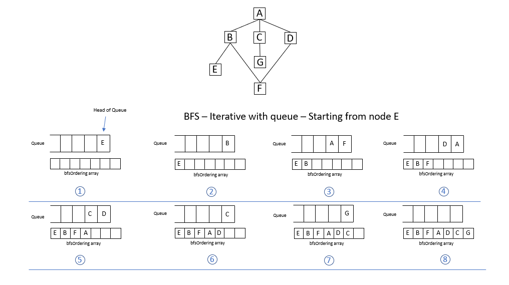

Class BfsTests
Tests methods in BFS class.
Inheritance
Inherited Members
Namespace: CSFundamentalsTests.Algorithms.GraphTraversal
Assembly: CSFundamentalsTests.dll
Syntax
[TestClass]
public class BfsTestsMethods
| Improve this Doc View SourceInitialize()
Initializes/Resets variables before executing each unit test in this class. To visualize the graph see:
Declaration
[TestInitialize]
public void Initialize()Iterative_StartFromA()
Tests the correctness of BFS iterative version, when starting from node CSFundamentalsTests.Algorithms.GraphTraversal.BfsTests._nodeA. To visualize the graph traversal steps see: .
Declaration
[TestMethod]
public void Iterative_StartFromA()Iterative_StartFromE()
Tests the correctness of BFS iterative version, when starting from node CSFundamentalsTests.Algorithms.GraphTraversal.BfsTests._nodeE. To visualize the graph traversal steps see: .
Declaration
[TestMethod]
public void Iterative_StartFromE()Recursive_StartFromA()
Tests the correctness of BFS recursive version, when starting from node CSFundamentalsTests.Algorithms.GraphTraversal.BfsTests._nodeA. To visualize the graph traversal steps see: .
Declaration
[TestMethod]
public void Recursive_StartFromA()Recursive_StartFromE()
Tests the correctness of BFS recursive version, when starting from node CSFundamentalsTests.Algorithms.GraphTraversal.BfsTests._nodeE.
To visualize the graph traversal steps see:  .
.
Declaration
[TestMethod]
public void Recursive_StartFromE()